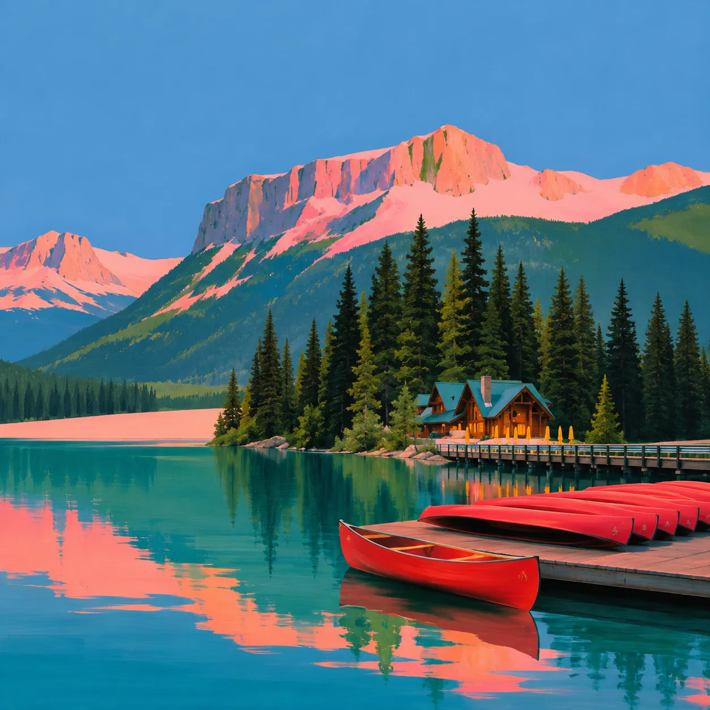

British Columbia, Canada. Kelowna, 49.888° N 119.496° W
Okanagan Valley
Ten nights in a chalet above Kelowna, in the heart of Canada's main wine region. Six people, never more.
Departures in 2027
- Length
- 10 nights
- Group
- 6 people
- From
- $26,900 MXN
- Base
- Chalet on Big White
Each day opens onto the region differently: cycling the historic wooden trestle bridges of Myra Canyon, tastings at wineries with long views, a boat trip on Lake Okanagan, moderate hikes beside lakes that change colour.
There is room for the urban and cultural side of the valley too, with chosen stops in Kelowna, Lake Country, Vernon, Peachland and Osoyoos. A niche trip, away from the busy routes, built so what you bring home actually stays.
Book the Okanagan Valley
30% today holds your seat, and you have 15 days to change your mind about it. The rest is settled 45 days before you travel — monthly, or in one payment.
- Cash on arrival: $3,050 MXN each for the shared transport fund. Not charged here.
- Extras are chosen after booking, never added to this total.
- If the departure does not fill, we tell you early and refund in full.
The valley, stop by stop
Every pin opens its day below. The chalet on Big White is home for eight nights; the last two are in Revelstoke.
Day by day
Twelve stops. Open the ones you care about — nothing here is fixed to the minute.
01 ArrivalA quiet first night
- Arrival and check-in
Afternoon arrival in Kelowna and the drive up to the chalet. Time to settle in, without rushing.
- First evening
A quiet night to recover from the journey.
02 Downtown KelownaCulture and city
- Art and local culture
The Wine & Orchard Museum and the Kelowna Art Gallery, with a coffee at Sprout in between.
- Walk by the lake, lunch on Bernard Road
- Electric boat on the lake
- Dinner
At a restaurant chosen by the chef.

03 Lake CountryWine and nature
- Oyama Lookout
- 50th Parallel Estate Winery
Known for its sustainable viticulture.
- Gray Monk Estate Winery
- Lunch at Peak Cellars
Overlooking the vines, then Kaloya Regional Park above Kalamalka Lake.

04 Myra CanyonThe iconic one
- Cycling the trestles
Two to two and a half hours over the historic wooden bridges suspended above the canyon.
- Free afternoon in Kelowna
- Dinner at the chalet
Cooked by the chef.

05 KelownaThe authentic Okanagan
- Kangaroo Creek Farm
- Fruit picking
At a local orchard, one of the most authentic things the valley does.
- Picnic by the lake
At Bertram Creek, with local wine.
- Summerhill Pyramid Winery
06 PeachlandA small town worth finding
- Pincushion Mountain
A moderate hike.
- Mission Hill Family Estate
- Cooking with the chef
With the fruit picked the day before.
07 VernonThe lake of colours
- Kalamalka Lake
The Wall Loop Trail, about 7 km above turquoise water, then a swim.
- Free afternoon
30th Avenue, local galleries, cafés, or nothing at all.
- BX Falls and Planet Bee

08 PentictonFloat and breweries
- The Penticton Channel Float
An hour drifting between Okanagan and Skaha lakes.
- Penticton Beer Blocks
09 To RevelstokeOn the road to the mountain
- The Trans-Canada
About two and a half hours, along Shuswap Lake.
- Revelstoke Mountain Resort
The gondola to the top of Mount Mackenzie.
Two nights in Revelstoke, not at the chalet.

10 RevelstokeMountain and adventure
- Meadows in the Sky Parkway
A short walk through the alpine meadows of the national park.
- Dinner in town

11 RevelstokeRiver, and back to Kelowna
- The Illecillewaet
Rafting or floating, paid to the operator.
- Enchanted Forest
- Back to Kelowna
At the chalet by six, for dinner.
12 DepartureBye bye Canada
- Breakfast and a short closing
- To Kelowna airport
The valley, photographed
The cover is painted. These are the places themselves.


What the price covers
Included
- Where you sleep
- A premium chalet on Big White Mountain. Shared private room with private bathroom, two people, Queen beds.
- Food
- 9 breakfasts and 6 dinners prepared by the chef.
- Getting around
- All travel by car.
- With you
- Host and chef, throughout.
- What you do
- The boat trip, hiking on Big White, cycling Myra Canyon, Kangaroo Creek Farm, two winery tastings, Kelowna, Lake Country and Vernon, Kalamalka Lake, BX Falls, fruit picking.
Not included
- Return flights
- Food and drink where not listed
- Medical and travel insurance
- Anything not listed as included
Paid on arrival: $3,050 MXN per person, in cash, for the shared transport fund. It covers the car, fuel and parking, with receipts.
Rooms
- Shared private room, Queen bedsIncluded
- Private room with a King bed+$4,200 MXN
Extras
- Chef's lunch boxabout $330
- Chef's picnicabout $530
- Tasting at Summerhill$224–346
- Tasting at Mission Hillabout $530
- Honey tasting at Planet Beeabout $122
- Bike park or Pipe Mountain CoasterPaid on the spot$500–900
- Rafting or floatingPaid to the operator$1,400–2,200
Who travels with you
Host
Federica Caglioti
Art Director and founder of Studio Superbo. She sets the rhythm of the trip: local culture, places with a real connection to nature, moments that stay in your memory. Italian and English.
Chef
Nora Maria Loya Ledesma
More than fifteen years in kitchens across Spain, the United States, Mexico and Canada. Global influences, local ingredients, and a guide to the valley for the meals on your own. Spanish and English.